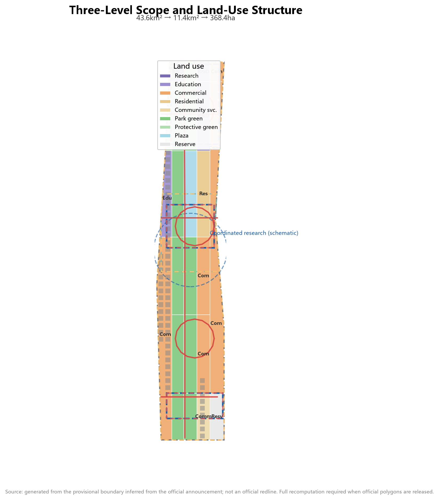
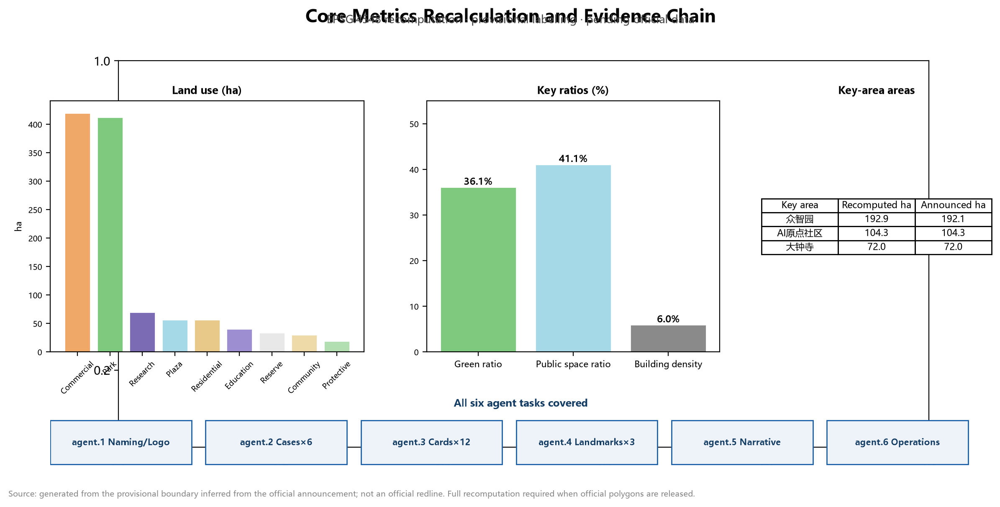

JINGZHANG HERRINGBONE — A Century of Switchbacks, Innovation Crossing the Mountain: Urban Design Proposal for the AI Innovation Belt
Taking the herringbone switchback line of the Jing-Zhang Railway at Badaling as its prototype, this proposal organizes the AI Innovation Belt as a two-way switchback system of 'up-line basic research — switchback conversion — down-line scenario deployment'; one belt, one spine, three switchback points, and two wings form a verifiable, reversible, and operable world-class AI innovation belt.
JINGZHANG HERRINGBONE — A Century of Switchbacks, Innovation Crossing the Mountain: Urban Design Proposal for the AI Innovation Belt
Design Basis and Source Inventory
This proposal takes as its primary basis the Prequalification Announcement for the International Urban Design Solicitation of the Centennial Jing-Zhang AI Innovation Belt published by the Haidian Branch of the Beijing Municipal Commission of Planning and Natural Resources 来源. The announcement defines three levels of scope (coordinated research area approx. 43.6 km², overall design area approx. 11.4 km², and key areas totalling approx. 368.4 ha), three positionings (Centennial Jing-Zhang Cultural Belt, Urban AI Life Experience Belt, and AI-Integrated Innovation Belt), and the deliverable depth of "regulatory-detailed-planning urban design depth plus implementation-plan depth" 标准.
The second basis is the co-creation taskbook addressed to AI agents 来源; its ten co-creation principles, five functions, three-areas-two-wings structure, and six agent tasks (agent.1–agent.6) form the task skeleton of this proposal 标准. All agent spatial suggestions are conceptual suggestions, reference schemes, or research materials for professional teams to deepen; they do not replace formal planning and do not constitute government-approved conclusions 来源.
The third basis is the development goals and current conditions reflected in government work plans and public reporting, forming the realistic starting point of this proposal's spatial judgements:
- Haidian District Government 2026 Economic and Social Development Plan Report (issued 2026-02-06) explicitly proposes "building an efficient and coordinated north-south dual AI core ecosystem and creating the Jing-Zhang Heritage Park Innovation Exchange Belt", requiring "planning 'AI+' benchmark spaces and prioritizing a batch of perceptible, exemplary innovation scenarios", and deploys "supporting BAAI in building the unified open-source system software stack Zhongzhi platform" and "promoting human-resource service industry parks to deeply participate in the construction of the Haidian AI Origin Community" 来源. These three points are the policy anchors of this proposal's three design threads: "innovation exchange belt space", "perceptible scenarios", and "open source and the Origin Community".
- Phase II of the Jing-Zhang Railway Heritage Park opened on 2026-08-06: a 9-km cultural belt green corridor linking Xizhimen to the Fifth Ring Road, with approx. 53 ha of land, directly serving 70 communities and 450,000 residents along the line; it has built a "three paths plus one green belt" seamless slow-mobility system, the southern section restoring original rails and the welding-factory industrial heritage, the northern section with the "Jing-Zhang Loop" theme plaza, and reserved space for a youth sci-tech innovation market 来源. The park's current state is the realistic base for this proposal's public-space design; this proposal does not duplicate what is built but fills its "innovation exchange" functional gap.
- The AI Origin Community is already operating: selected in January 2026 as one of Beijing's first batch of AI innovation districts, ranked among the "Global Top Ten Innovation Districts" of 2025, centered on Origin Tower radiating approx. 3 km², gathering 30+ universities and research institutions, 230+ AI enterprises, and 100,000 AI-related students; it has built Origin Tower, the "Gate of Victory" art installation, the Starlight Avenue robot consumer scenario, and held branded events such as "Origin Party Nights" 来源. The three switchback-point designs start from these built facts, doing "chain-filling, linking, and upgrading" rather than starting from scratch.
- Open source is a national strategic direction: at the AI Open-Source Frontier Forum of the 2026 Zhongguancun Forum annual conference "AI Theme Day", BAAI released the Zhongzhi FlagOS 2.0 compute foundation (an open-source system software stack for the agent era), and the state level has specifically deployed AI open-source projects 来源. Public display of open-source outcomes and honor spaces for developers are important bases for this proposal's pilgrimage landmark system.
The fourth basis is the machine-readable site package registered by repository maintainers: the design brief, allowed design space, enums, ranges, and schemas under brief/site-package/, together with the source usability registry data/source_registry.json 来源 来源. data/processed/agent_fact_pack.md serves only as a reading navigation layer 来源.
All spatial calculations use the repository's provisional rough boundary (brief/site-package/geometry/provisional_boundaries.geojson); every layer is labelled provisional_constraint, official_boundary=false 空间数据 空间数据. The boundary was inferred from the announcement's textual extents and approximate areas; it does not express road redlines, parcel boundaries, or ownership boundaries. When official polygons are released, all layers and metrics in this package must be recomputed as a whole chain. This organizer data gap does not block content scoring 来源.

Three-Level Scope Framework
The proposal organizes work in the three levels defined by the announcement, each with a clear design question, deliverable depth, and data anchor 深度:
| Level | Design question | Proposal answer | Data anchor |
|---|---|---|---|
| Coordinated research area (43.6 km²) | AI industry ecology and future city form | "Herringbone switchback" innovation chain: university ideation — open-source collaboration — enterprise conversion — public experience — international dissemination | compliance_matrix, standard_matrix |
| Overall design area (11.4 km²) | Industrial space, urban renewal, mobility, utilities, and character | One belt, one spine, three switchback points, two wings: land-use and public-space structure | 空间数据, 空间数据 |
| Key areas (368.4 ha) | Fine-grained design of three districts | Zhongzhiyuan / AI Origin Community / Dazhongsi as training-switchback, origin-switchback, and landing-switchback detailed schemes | 空间数据, 空间数据, 空间数据 |
Overall spatial structure: "one belt, one spine, three switchback points, two wings, multiple scenario nodes." The belt is the Jing-Zhang Heritage Park vitality belt (the north-south main axis, i.e., the "track" of the character 人). The spine is the park's slow-mobility main route. The three switchback points are the three key areas. The two wings — the Zhongguancun Technology Service Wing (west) and the Xiaoyuehe Scenario Empowerment Wing (east) — form the two strokes of the character 人. Multiple scenario nodes are AI scenario stations distributed along the belt 深度.
The core metaphor comes from the herringbone switchback line of the Jing-Zhang Railway at Badaling: in 1909, Zhan Tianyou conquered a 33‰ grade by switchback climbing, with two locomotives pushing and pulling to complete the crossing — the landmark engineering feat of China's first self-built railway. A century later, the Haidian AI Innovation Belt uses the same wisdom to organize innovation: innovation is not a straight line but a switchback. The "up-line train" (basic research and original innovation) departs from Zhongzhiyuan, completes conversion at the AI Origin Community (the switchback point), and arrives at Dazhongsi as the "down-line train" (scenario deployment and industrial landing). Every switchback is a value leap; the character 人 is simultaneously the "human" of human-centred design 来源 深度.
This metaphor echoes the government goals in three ways: first, the "self-built" Jing-Zhang Railway and "self-reliant" AI innovation share the same spiritual gene, echoing Haidian's north-south dual AI core ecosystem narrative of self-reliance 来源; second, the spatial logic of "switchback = conversion" translates the innovation chain into a "walkable, perceptible" urban route, echoing the goal of "creating the Jing-Zhang Heritage Park Innovation Exchange Belt" 来源; third, the park's Phase II 9-km green corridor provides a ready carrier for the "herringbone main axis", on which this proposal does "chain-filling" rather than "rebuilding" 来源.

Coordinated Research Area: Industry and Future City Study
Problem diagnosis: the gap between government goals and current state
The coordinated research area answers "where Haidian's AI industry is heading and what role the innovation belt plays." Policy analysis shows that the government's expectation is the convergence of three threads 来源: the industry thread (north-south dual AI core ecosystem), the space thread (Jing-Zhang Heritage Park Innovation Exchange Belt), and the scenario thread (perceptible, exemplary innovation scenarios). Against this, four gaps exist:
First, the gap between park space and AI narrative: the 9-km green corridor is built but oriented to heritage science popularization, ecological leisure, and commuting fitness, lacking the spatial language of "innovation exchange" — the "third places" where developers, founders, and researchers stay, discuss, and present 来源. Second, the innovation chain lacks spatial linkage across the three areas and two wings: the AI Origin Community is highly active internally, but the innovation links among Zhongzhiyuan, Dazhongsi, and the Origin Community remain at the industrial-logic level, lacking a north-south "chain" at the public-space level 来源. Third, open-source outcomes lack public display and honor space: national-level open-source outcomes such as Zhongzhi FlagOS are born in Haidian, but the public has nowhere to see them and developers have no honor to be recorded 来源. Fourth, the cultural narrative is not integrated: Jing-Zhang railway, Zhongguancun, and AI cultures have not formed a unified narrative with international expression.
Design response: spatializing the three positionings and five functions
Against these gaps, the proposal translates the three positionings into operable spatial and operational mechanisms 来源:
- Centennial Jing-Zhang Cultural Belt: the heritage park as the historical main axis, converting the engineering wisdom of the herringbone switchback into an urban narrative and public-art system, filling the park's "cultural narrative layer" 深度 来源.
- Urban AI Life Experience Belt: rail nodes such as Wudaokou, Qinghe, and Dazhongsi as the skeleton, organizing AI+ mobility, AI+ public services, and AI+ consumption into a walkable, perceptible daily experience, fulfilling the "perceptible and attainable" requirement 深度 来源.
- AI-Integrated Innovation Belt: the "up — switchback — down" innovation loop organizing full-stack self-reliant innovation, the open-source ecosystem, and the intelligent economy, echoing the "north-south dual AI core ecosystem" 来源.
The five functions are anchored in space: the full-stack self-reliant innovation system (Zhongzhiyuan); the world-class AI innovation ecosystem (AI Origin Community); the new paradigm of AI+ scenario empowerment (Xiaoyuehe Scenario Empowerment Wing); the intelligent vibrant AI city (public space and slow-mobility systems); and global discourse power in AI governance (standards and safety governance at Zhongzhiyuan plus data-element circulation at Dazhongsi) 来源.
Overall concept, naming system, and visual identity (agent.1)
Primary name: "JINGZHANG HERRINGBONE" (人字京张). The naming system has three levels:
1. Belt name: JINGZHANG HERRINGBONE — the century-old memory of the herringbone switchback line plus the spatial metaphor of the innovation belt, with a pun on human-centred design (人 = human); directly corresponding to the government's "Jing-Zhang Heritage Park Innovation Exchange Belt" formulation 来源. 2. Three switchback names: "Training Switchback · Zhongzhiyuan", "Origin Switchback · AI Origin Community", and "Landing Switchback · Dazhongsi", corresponding one-to-one with the up—switchback—down loop; the "Origin Switchback" naturally connects with the operating "Origin" IP of the AI Origin Community (Origin Tower) 来源. 3. Node and event names: "Switchback Stations" (AI scenario nodes), "Up-line Train / Down-line Train" (two-way talent and industry flow), and "Mountain-Crossing Moment" (the annual innovation festival).
Logo direction: the herringbone switchback track as the basic form — two arrows in opposite directions meeting at one switchback point, forming an open 人-shaped loop; one stroke represents research going up, the other scenario coming down, and the meeting point is the conversion node. The logo is a directional concept only; typefaces, graphics, and standard colours await professional design and rights clearance 深度 来源.
Visual identity (directional suggestion): to support the "global recognition" goal 来源, a three-layer VI system is suggested: (1) standard colours — railway rust red (#8C3B2E, heritage) and AI electric blue (#1B5FA8, future) as primary, Qinghe green (#2E7D32) and Origin gold (#C79838) as secondary; (2) standard typefaces — Chinese using Source Han Sans/Microsoft YaHei Bold for headings and regular weight for body, English using sans-serif (Inter/Roboto), and monospace for numbers and code annotations, ensuring international legibility; (3) auxiliary graphics — a continuous pattern generated from the herringbone trajectory unit, used in wayfinding, paving, railings, and event visuals, forming unified recognition from logo to spatial interface. All are conceptual suggestions; standard colour values, font licensing, and application specifications await professional design and clearance.
Global AI innovation ecosystem cases and the Haidian ecosystem scheme (agent.2)
Six global cases are benchmarked, from which six transferable lessons are distilled 深度:
| Case | Core mechanism | Transfer to Jing-Zhang |
|---|---|---|
| Silicon Valley, USA (Stanford–101 corridor) | University ideation + venture capital + corporate clusters along a linear corridor | University ideation arranged along the heritage park main axis; capital services placed in the Zhongguancun Technology Service Wing |
| Kendall Square, Boston, USA | Near-campus innovation community mixing conversion and life | Strengthen the AI Origin Community "near-campus conversion street", echoing its operating near-campus ecosystem 来源 |
| Punggol Digital District, Singapore | Garden-type industrial park; green space hosting innovation exchange | Zhongzhiyuan as a "garden-type AI block" with a low-carbon Qinghe riverfront |
| King's Cross, London, UK | Rail-transit-driven large-scale urban renewal + tech clustering | Dazhongsi station four-quadrant integration and the intelligent-economy block |
| Nanshan Science Park, Shenzhen, China | Flagship-enterprise pull + hardware innovation ecosystem | Dazhongsi flagship enterprises pulling agent and terminal industries |
| Munich digital industry cluster, Germany | Standards, testing, and governance combined with industry | Zhongzhiyuan standards-setting and safety-governance display node |
The common lesson: an innovation ecosystem = ideation (research) + conversion (intermediaries) + landing (industry) + atmosphere (urban life), a closed loop of four elements. To answer the requirement of "a Haidian innovation ecosystem scheme covering basic research, industrial incubation, and capital services", the proposal spatializes the four elements into a three-stage scheme 深度:
- Basic research stage (ideation): relying on Tsinghua, Peking University, CAS, and new R&D institutions such as BAAI, located in the AI Origin Community's "near-campus conversion street" and university collaborative-innovation education land 空间数据; the government has deployed "supporting BAAI in building the unified open-source system software stack Zhongzhi platform", and this proposal uses the open-source release hall as its public interface 来源.
- Industrial incubation stage (conversion): an incubation corridor along "Origin Community—Zhongzhiyuan" — the Origin Community carries early incubation, outcome release, and talent-zone services; Zhongzhiyuan carries pilot testing, standards governance, and industry display; at the land level, incubation land and R&D testing land jointly support it 空间数据.
- Capital services stage (capital): the Zhongguancun Technology Service Wing places sci-tech financial service stations, financing roadshows, IP, and international technology trading functions, connecting with the government's "sci-tech financial service stations" and "Chuangrong Haidian" layout 来源; the Dazhongsi International Roadshow Lounge serves as the capital-industry interface.
Three-areas-two-wings synergy loop
The "three areas and two wings" form a two-way loop: research goes up (universities — AI Origin — Zhongzhiyuan testing), factors are supplied (the Zhongguancun Technology Service Wing provides capital, IP, and global allocation services), scenarios come down (the Xiaoyuehe Scenario Empowerment Wing brings technology into daily life), and feedback returns (scenario data and needs flow back to the ideation end). The loop is not a one-way pipeline but a reversible, iterative switchback system: at any point where validation fails, projects and scenarios can pause, roll back, or retry 来源 深度. Compared with the AI Origin Community's operating "ten-minute innovation circle", this loop extends the aggregation scale of innovation elements from "within the community" to "nine kilometres along the belt" 来源.
Overall Design Area: Urban Renewal and Regulatory-Plan-Depth Urban Design
Land-use structure and industrial space
The overall design area covers 11.4 km². geometry/land_use.geojson completely covers the submitted boundary with 25 seamless parcels 空间数据 指标. Core land-use judgements:
- Park green, blue-green corridors and plaza (1401+1402+1403, approx. 488.8 ha, 42.8%): the Jing-Zhang Heritage Park vitality belt as the spine (approx. 412.5 ha), linked north to the Qinghe–Zhongzhiyuan blue-green corridor and the Fifth Ring green wedge, and south to the Dazhongsi station composite park; the Wudaokou AI Origin Plaza (approx. 56.9 ha) symbolizes the switchback point 空间数据 指标. The green ratio embodies the "garden-type AI innovation belt" positioning that supports a high-quality urban district attractive to talent.
- Commercial service land (05, approx. 420.0 ha, 36.8%): concentrated in the Dazhongsi intelligent-economy block, the Origin Community consumption scenarios, and the Zhongzhiyuan industrial-service frontage, hosting agents, intelligent terminals, content consumption, and data-element circulation 空间数据.
- Research and education land (0802+0804, approx. 110.9 ha): Zhongzhiyuan full-stack R&D and testing (approx. 70.2 ha) and university collaborative-innovation education land (approx. 40.7 ha), forming the up-line of "ideation—conversion" 空间数据 空间数据.
- Residential and community service land (0701+0702, approx. 87.6 ha): the AI talent community (approx. 56.9 ha) adjacent to the Origin Community, serving an integrated "work-life-social-learn" environment 空间数据.
Building scale and retain/renovate/demolish logic
geometry/buildings.geojson uses 60 illustrative building footprints to express the spatial-supply form of renewed blocks (approx. 68.3 ha, building density approx. 6.0%) 空间数据 指标 指标. Retain/renovate/demolish follows three logics 深度:
- Retain: heritage assets such as Qinghuayuan Railway Station, the built section of the heritage park, and the main buildings of existing universities and parks;
- Renovate: low-efficiency factories, wholesale markets, and ageing commercial frontages along the belt, mainly through "function replacement + form renewal";
- New-build / reserve: potential renewal parcels and the southern reserve parcel (approx. 33.8 ha) as elastic innovation reserves 空间数据.
Statutory control indicators — FAR, building height, density, green ratio, setbacks, and road redlines — are not available in public materials; floor_area_ratio in metrics.json is marked unknown and will be recomputed once official regulatory conditions are confirmed 指标 [assumption:A-CONTROLS-001].
Renewal project list and implementation policies
Six types of renewal projects (JZ-01—JZ-06) are formed at the overall-design level, covering slow-mobility gap stitching, the Qinghe innovation frontage, the near-campus conversion street, Dazhongsi four-quadrant connectivity, AI public-service nodes, and the global AI event route 深度; details are given in the "Renewal Project List, Implementation Policies and Phasing" chapter. Policy suggestions — coordinated renewal entities, elastic FAR bonuses linked to public-interest space, scenario-open licensing, a compliant data-element circulation framework, and public-participation mechanisms — are all proposed as conceptual suggestions 深度.
Key Areas: Detailed Design
The three key areas each reach implementation-plan urban design depth, each forming a complete sub-scheme of "positioning + spatial structure + building renewal + mobility and slow movement + public space + AI scenarios + implementation risks" 深度, with spatial evidence in the three layer features for Zhongzhiyuan, the AI Origin Community, and Dazhongsi 空间数据.
Zhongzhiyuan AI Self-Reliant Innovation Acceleration Area (Training Switchback, approx. 192.1 ha)
Positioning: a garden-type full-stack self-reliant innovation block and the departure station of the AI "up-line train". Spatial structure: the Qinghe frontage as the northern ecological and display interface, organizing a triangle of "R&D-testing core + standards-governance terrace + industry-display gallery". Building renewal: centred on the national AI platform and surrounding potential parcels, with suggested functions of full-stack R&D, standards workshops, safety-governance display, and low-carbon compute experience; low-rise garden-type blocks as the main form. Mobility: outward-traffic optimization direction proposed in coordination with Fifth Ring integrated planning; slow-priority micro-circulation within. Public space: the Qinghe–Zhongzhiyuan blue-green corridor hosts open testing and innovation exchange 空间数据. AI scenarios: model red-team testing, standards workshops, safety-governance display, low-carbon compute experience. Risks: Qinghe blue line and flood-control conditions, land ownership around the national platform, and the Fifth Ring outward-traffic scheme all await official data.
Beijing AI Origin Community (Origin Switchback, approx. 104.3 ha)
Positioning: a near-campus conversion and talent community — the "switchback point" of the innovation chain. Spatial structure: Wudaokou–Qinghua East Road West station nodes as the gateway, organizing "conversion street + open-source release hall + talent community". Building renewal: a low-disruption, organic-renewal retain/renovate/demolish scheme — ageing commercial and residential frontages around universities mainly undergo function replacement, with new conversion-incubation and talent-service carriers added. Mobility: integrated design around Wudaokou and Qinghua East Road West stations, stitching campus–park–block slow-mobility links 空间数据. Public space: the Wudaokou AI Origin Plaza and open-source venue (plaza land 1403) as the symbol of the switchback point 空间数据. AI scenarios: the open-source release hall, near-campus conversion street, talent-special-zone services, and AI education experiences. Risks: campus boundaries, ownership, and ground-floor functions are constrained by university and block realities and must be confirmed case by case.
Dazhongsi AI Industry Cluster (Landing Switchback, approx. 72.0 ha)
Positioning: an urban intelligent-economy and international-exchange block — the terminus of the AI "down-line train". Spatial structure: anchored at Dazhongsi station, organizing "four-quadrant pedestrian connectivity + intelligent-economy block + data-element service terrace". Building renewal: around flagship enterprises and university renewal schemes, with suggested functions of agents, intelligent terminals, and content consumption. Mobility: four-quadrant pedestrian connectivity at the Dazhongsi station intersection, plus non-motorized parking and static-traffic organization 空间数据. Public space: composite use of the Dazhongsi station composite park for industrial display and international exchange 空间数据. AI scenarios: agent and terminal display, content-consumption experience, data-element sandbox circulation, and international roadshows. Risks: the rail-integration scheme, composite green-land conditions, and ownership around flagship enterprises await confirmation.

AI Innovation Ecosystem, Talent Profiles, and AI+ Scenarios
Problem diagnosis and response: how AI+ scenarios enter specific streets
To answer the requirement of "designing how AI+ healthcare, AI+ education, and AI+ commerce scenarios enter specific blocks to build perceptible future life scenarios", the proposal follows two principles: first, scenarios must be perceptible — consistent with the government's "perceptible and attainable, exemplary" requirement, scenarios land on real street frontages rather than abstract nodes 来源; second, scenarios must connect with built realities — the AI Origin Community already has the "Starlight Avenue" robot consumer scenario, and this proposal extends rather than duplicates it 来源. Three model streets are thus proposed:
| Model street | Location | AI+ field | How it enters the block |
|---|---|---|---|
| Wudaokou Wisdom-Education Street | AI Origin Community, between Wudaokou and Qinghua East Road West stations | AI+ education | Street frontages carry "AI classroom windows" (university open lectures/model demos), near-campus conversion stations, and student innovation workshop ground floors, leveraging the operating community footfall and university resources 来源 |
| Dazhongsi Intelligence-Commerce Street | Dazhongsi station four quadrants | AI+ commerce | Station-city integration: ground floors organize agent stores, terminal experience shops, and content-consumption spaces, linked with composite green-land use, forming a "exit-the-station-then-experience" route |
| Qinghe Wisdom-Medical Frontage | Zhongzhiyuan riverfront section | AI+ healthcare | Combining smart eldercare and AI-assisted diagnosis directions, community service land carries AI health cabins and telemedicine stations, forming a "health + green" composite scenario with the Qinghe blue-green frontage 来源 |
All three model streets land on building-footprint and public-interface layers, serving as readable demonstrations of "how AI+ scenarios enter specific blocks" 空间数据 深度.
Five user personas (agent.3)
The proposal establishes five user personas, each with spatial responses and governance boundaries 深度:
| Persona | Typical needs | Spatial response | Self-check boundary |
|---|---|---|---|
| Open-source developer | Release, collaborate, test, community reputation | Origin Community open-source release hall, public code wall, night collaboration space | No personal behavioural tracking; event data aggregated only |
| Startup team | Low-cost office, compute access, product testbed | Zhongzhiyuan shared testing field, edge-compute station, standards-governance advisory | Compute and data services require separate authorization |
| Flagship-enterprise visitor | Display, business, international reception, recruitment | Dazhongsi international roadshow lounge, station connectivity, public space around key enterprises | Corporate logos and cases require rights clearance |
| Local resident | Commuting, leisure, community services, low-disruption renewal | Heritage park slow loop, embedded community services, graded night lighting and events | Resident profiles not used for commercial recommendation |
| University faculty and students | Conversion, cross-campus collaboration, daily slow movement | Campus–park slow-mobility stitching, conversion stations, AI education experience points | Campus data and research results require authorization |
Twelve AI scenario cards (agent.3, including 3 industry test/validation scenarios)
Scenario cards cover industrial scenarios and urban-function scenarios; each card states the spatial carrier, target users, data sources, privacy boundary, human review, and operating entity 深度:
| Card | Spatial carrier | Type | Design note |
|---|---|---|---|
| 01 Model red-team testing field | Zhongzhiyuan | Industry test/validation | Adversarial testing and safety evaluation of full-stack models; visitable, bookable, supervised; results published only after human review |
| 02 Data-element sandbox circulation room | Dazhongsi | Industry test/validation | Compliant, authorized, auditable data-element and digital-asset circulation trials; no personal data processing |
| 03 Edge-compute station | Nodes in overall design area | Industry test/validation | New-infrastructure prototype combining edge compute and distributed energy; small pilot, graded rollout after validation |
| 04 Open-source release hall | AI Origin Community | Industrial scenario | Release events, code-contribution display, and small roadshows serving the developer community; connecting with the BAAI open-source ecosystem 来源 |
| 05 Near-campus conversion street | AI Origin Community | Industrial scenario | Incubation, display, legal, IP, and financing services on one street |
| 06 Dazhongsi international roadshow lounge | Dazhongsi | Industrial scenario | Display, negotiation, and media release for agent, terminal, and content-consumption enterprises |
| 07 AI slow-mobility navigation and gap detection | Heritage park spine | Urban function | Explainable wayfinding and low-intrusion sensing identifying slow-mobility gaps, crowding, and accessibility needs; data-minimal |
| 08 Qinghe low-carbon innovation gallery | Zhongzhiyuan riverfront | Urban function | Public living room combining green space, stormwater, walking/cycling, and AI display |
| 09 AI life-service model street | Community–commerce junction | Urban function | Small-block deployment of AI+ healthcare, education, legal, and life services |
| 10 Qinghuayuan Station AI cultural guide | Southern heritage park | Urban function | Explainable guide to centennial Jing-Zhang culture, Zhongguancun innovation, and AI new culture |
| 11 Public-safety AI review drill field | Public-space nodes | Urban function | AI-assisted crowd-flow and event-safety drills, with humans retaining final decisions |
| 12 Global AI event week route | Belt public-space system | Operational scenario | A walkable experience route from heritage culture, open-source community, industrial display, to international roadshows |
All scenarios follow the principles of data minimization, public sources, explainability, and human review: urban agents may assist in identifying slow-mobility gaps, public-space heat, facility maintenance, and event-safety risks, but cannot replace planning approval, output unauthorized personal profiles, or claim official implementation commitments 标准 深度.
Blue-Green Space, Public Space, and Urban Character
Current-state analysis and functional chain-filling: the innovation-exchange gap in the park's public space
Phase II of the Jing-Zhang Heritage Park has built a 9-km green corridor and the "three paths plus one green belt" slow-mobility system 来源; this proposal does not duplicate construction but does "chain-filling" for three functional gaps: first, innovation exchange space is absent — the corridor is mainly ecological leisure, lacking places where developers and founders stay and exchange; second, open-source outcomes have nowhere to be displayed — national-level open-source outcomes lack a public-facing display interface 来源; third, contributors lack honor space — developer contributions have no recording carrier at the urban scale. Three landmark components are thus designed:
Landmark component 1: Developer Promenade (along the heritage park slow spine)
Design logic: the park has built walking, jogging, and cycling paths 来源; this component overlays "innovation exchange" functions along the walking path without adding roads. Spatial actions: open discussion nodes (shaded seating + whiteboard/touch discussion terminals + movable roadshow platforms) along both sides of the walking path, one "Switchback Station" every approx. 500 m, linked with scenario card 07 (slow-mobility navigation); node siting prioritizes the junctions between the three switchback points and the park, making "walking is exchanging". Layers and metrics: public-space layer 空间数据 指标. Risks: station facilities require coordination with the park management authority; lighting and accessibility follow current codes 标准.
Landmark component 2: Open-Source Outcomes Display Gallery (Origin Community)
Design logic: open source is a national strategy and outcomes such as BAAI FlagOS are born in Haidian 来源, but the public has nowhere to see them; the AI Origin Community already has footfall and ecosystem 来源, making it the optimal location. Spatial actions: an "Open-Source Outcomes Display Gallery" on the Origin Community's near-campus conversion street — updatable digital exhibition walls plus physical display cases presenting open-source models, datasets, and code contributions, published after copyright and security review; sharing space with the open-source release hall (card 04) to form an integrated "release—display—exchange". Layers and metrics: building-footprint and public-space layers 空间数据. Risks: displayed content involves enterprise IP and requires an authorization and review mechanism.
Landmark component 3: Agent Contribution Honor Wall (Wudaokou Herringbone Viewing Terrace)
Design logic: developers are the core contributors of AI innovation, but urban space lacks honor records for them; the viewing terrace in the herringbone form symbolizes the switchback point, and the honor wall combined with it forms "contribution is the landmark". Spatial actions: an Agent Contribution Honor Wall inside the Wudaokou Herringbone Viewing Terrace — updatable digital plaques recording open-source contributors, model authors, and scenario co-builders (displayed with their consent and authorization), linked with developer community operations (agent.6) to form a "contribute—record—honor" loop 深度. Layers and metrics: public-space layer 空间数据. Risks: personal information protection must strictly follow authorization and minimization principles 标准.
Three AI pilgrimage landmarks (agent.4)
1. Qinghuayuan Railway Station · Centennial Origin Monument (south of the AI Origin Community): the Jing-Zhang railway heritage asset plus the AI cultural origin, with a "from whistle to compute" timeline installation displaying the dual-century narrative of Qinghuayuan Station and Haidian AI development 深度; 2. Wudaokou · Herringbone Switchback Viewing Terrace (AI Origin Community): a public structure in the form of the herringbone switchback track, symbolizing the conversion node of the innovation chain, housing the open-source contribution honor wall and developer memorial plaques 深度; 3. Dazhongsi · AI Window on the World (Dazhongsi station composite park): a public-art landmark evoking data flows and model inference, hosting international roadshows and outcome releases for global dissemination 来源.
All landmarks are conceptual suggestions and do not express approved construction; all wayfinding, signage, symbols, and public art require full rights clearance before implementation 深度.
Public-space component library
To support the "perceptible and attainable" requirement 来源, a public-space component library is suggested: five component types — discussion nodes (shaded seating + whiteboards), display units (digital walls + physical cases), honor units (digital plaques), roadshow platforms (movable), and wayfinding units (herringbone pattern) — combinable and reusable at the three switchback points and stations, ensuring visual unity across the belt.
Mobility, Rail, Municipal Services, and Public Facilities
The mobility scheme addresses rail-station integration, road micro-circulation, slow-mobility gaps, outward traffic, parking, and non-motorized traffic organization 深度:
- Slow-mobility spine: the north-south through slow-mobility route of the Jing-Zhang Heritage Park as the "herringbone track", organizing east-west stitching mouths and grade-separated crossing nodes 空间数据; connected with the park's Phase II "three paths plus one green belt" system as functional chain-filling rather than new construction 来源.
- Rail integration: integrated design at Wudaokou, Qinghua East Road West, and Dazhongsi stations, with rail nodes as switchback gateways 空间数据 空间数据.
- Micro-circulation: block micro-circulation loops in each of the three key areas, linking slow movement and transit 空间数据 空间数据.
- Outward traffic: optimization direction for Zhongzhiyuan outward access in coordination with Fifth Ring integrated planning.
Municipal and new infrastructure integrate distributed energy, edge compute, AI industry services, and talent life services 深度. Missing road redlines, utilities, fire, and municipal conditions are listed in assumptions as pending, not written as approved conditions 空间数据.

Cultural Narrative and Guide Route (agent.5)
Complete narrative: the "Whistle—Circuit—Compute" three acts
To answer the requirement of "organizing the centennial railway culture, Zhongguancun culture, and AI new culture into a complete narrative", the proposal builds a three-act narrative 深度 来源:
- Act I · Whistle (1909–1949): the Jing-Zhang Railway was self-built, with Zhan Tianyou's herringbone switchback, symbolizing "self-reliance, self-strengthening, daring to be first"; spatial carriers are the Qinghuayuan Station monument and the restored rails in the southern heritage park.
- Act II · Circuit (1978–2018): from Zhongguancun's "electronics street" to science parks, symbolizing "innovation, breakthrough, factor aggregation"; spatial carriers are the Zhongguancun Technology Service Wing and the Origin Community's conversion interface.
- Act III · Compute (2019– ): AI large models, the open-source ecosystem, and the intelligent economy, symbolizing "open source, openness, global collaboration"; spatial carriers are the Open-Source Outcomes Display Gallery, the Agent Contribution Honor Wall, and the AI Window on the World.
The three acts jointly answer the century-long theme of "from self-built railways to self-built intelligence", with the herringbone switchback as the spatial and spiritual thread running through all three 来源.
Cultural guide route and spatial nodes
A cultural guide main route with nodes along the line is configured: the start at Qinghuayuan Railway Station · Centennial Origin Monument (Act I) → Wudaokou · Herringbone Switchback Viewing Terrace and Open-Source Outcomes Display Gallery (Acts II and III converging) → Dazhongsi · AI Window on the World (end of Act III), linking the three switchback points and the three-act narrative; cultural marker nodes every approx. 500 m along the line, shared with the Developer Promenade stations. Guide content is presented multilingually (Chinese/English), serving international visitors and study groups 深度. The guide route connects with scenario card 10 (Qinghuayuan Station AI cultural guide) and card 12 (global AI event week route), forming a three-layer system of "walking guide—digital guide—event guide".
Renewal Project List, Implementation Policies, and Phasing
Renewal project list
| No. | Project | Type | Key dependencies | Evidence |
|---|---|---|---|---|
| JZ-01 | Heritage park slow-mobility gap stitching | Public space/mobility | Road redlines, under-bridge space, traffic review | 空间数据 |
| JZ-02 | Qinghe innovation frontage at Zhongzhiyuan | Blue-green/industry display | River blue line, ecology, flood control | 空间数据 |
| JZ-03 | Origin Community near-campus conversion street | Urban renewal/industry services | Campus boundaries, ownership, ground-floor uses | 空间数据 |
| JZ-04 | Dazhongsi station four-quadrant pedestrian connectivity | Rail integration/slow movement | Station, intersection, utilities | 空间数据 |
| JZ-05 | AI public service and edge-compute nodes | New infrastructure/public services | Energy, compute, safety, operating entity | 空间数据 |
| JZ-06 | Global AI event week public route | Operations/brand | Public-space permits, event safety, rights clearance | 空间数据 |
| JZ-07 | Developer Promenade Switchback Stations | Public space/operations | Park management coordination, accessibility, lighting | 空间数据 |
| JZ-08 | Open-Source Outcomes Display Gallery | Public space/industry display | IP authorization, content review mechanism | 空间数据 |
Phasing
geometry/phasing.geojson expresses three phases 空间数据 空间数据 空间数据:
- Phase 1 (near-term pilot): the three key areas and the heritage park main axis, approx. 369.3 ha, starting with lightweight facilities, scenario opening, and operational events 指标; prioritizing the three landmark components — Developer Promenade stations, the Open-Source Outcomes Display Gallery, and the Honor Wall;
- Phase 2 (mid-term renewal): the Origin Community–Wudaokou vitality core, stitching campus, park, and block 指标;
- Phase 3 (long-term governance): the two-wing expansion and southern reserves as elastic innovation reserves 指标.
Global AI event system and long-term operations loop (agent.6)
To answer the requirement of "converting the 'pilgrimage site' from concept into annual events and an operations loop", the proposal establishes a landmark-event-operations closed-loop mapping 深度 深度:
| Landmark/space | Annual event | Operating entity (suggested) | Conversion indicators |
|---|---|---|---|
| Zhongzhiyuan testing field | Spring "Mountain-Crossing Moment · Model Evaluation Festival" | National AI platform / park operator | Number of test scenarios opened, participating developers |
| Open-Source Gallery + Release Hall | Summer "Open-Source Switchback · Developer Conference" | BAAI and open-source bodies + community operators | Number of open-source releases, contributor growth |
| Dazhongsi roadshow lounge | Autumn "Landing Switchback · Intelligent Economy Expo" | Industrial park + exhibition operator | Number of roadshow projects, financing matches |
| Belt public spaces | Winter "Annual Review · Scenario Retrospective" + Global AI Event Week | Government coordination + community co-building | Scenario usage frequency, international participation |
Developer community operations: the open-source release hall and public code wall as spatial carriers, with a contributor honor system (linked with the Agent Contribution Honor Wall), code review and rollback mechanisms, and quarterly meetups. Scenario-open operations: a "scenario-open licensing" mechanism through which enterprises may apply for testing scenarios within agreed data and safety boundaries; test results are published after human review. Public experience and landmark operations: the global AI event week route links the three switchback points and the cultural guide route into a walkable, shareable public experience. International dissemination and conversion: the "JINGZHANG HERRINGBONE" brand and the "whistle—circuit—compute" narrative target global audiences; talent, enterprise, and developer conversion occurs through roadshows and scenario opening, with conversion paths and performance indicators to be calibrated by operational data. All events, investment, funding, policy, and operational arrangements are conceptual suggestions and do not constitute confirmed government arrangements 来源.
Land Use, Building Scale, and Retain/Renovate/Demolish
Land use follows 标准 codes including 0802/0804/05/0701/0702/1401/1402/1403/16, forming a complete, closed, seamless partition 空间数据. Building footprints express the spatial-supply form of retained, renovated, and new buildings 空间数据 深度. Building-scale and intensity indicators stay consistent with metrics.json: computable spatial indicators (areas, ratios, counts) are known; statutory control indicators (FAR, height, density, green ratio, setbacks) are unknown pending official conditions 指标 [assumption:A-CONTROLS-001].
Indicator System, Area Recalculation, and Compliance Matrix
Indicators are organized in three classes 深度:
1. Spatially computable indicators (known): site_area_sqm (11,412,825.4), key_detailed_design_area_sqm (3,692,893), green_ratio (0.3614), public_space_ratio (0.4113), building_density (0.0599), land_use_parcel_count (25), key_area_count (3), phase_count (3) 指标 指标 指标. 2. Control indicators requiring official regulatory planning (unknown): FAR, building height, density, green ratio, setbacks, road redlines 指标 [assumption:A-CONTROLS-001]. 3. Performance indicators requiring operational calibration: AI innovation index, talent density, event participation, scenario usage frequency — recorded in the compliance matrix as future deepening directions, not disguised as approved planning conditions.
The 36.1% green ratio and the 41.1% public-space ratio (blue-green plus plaza totalling 42.8%) support the "garden-type AI innovation belt" positioning and a high-quality district attractive to talent; the three switchback-point areas, recomputed in EPSG:4548 against the announced approximate areas (192.1/104.3/72.0 ha), deviate by +0.02% to +0.43%, consistent with provisional-boundary precision expectations 指标 指标 指标.
compliance_matrix.json covers every mandatory task of announcement sections 1.3/1.4/1.5 and agent.1–agent.6; standard_matrix.json covers all mandatory professional standards; design_depth_matrix.json sets all required depth items to complete. Together with metrics.json, sources.json, and assumptions.json, they form the machine-audit layer 来源.

Risks, Copyright, and Compliance
Bilingual contract: this package declares bilingual_contract_version: "1"; the primary file is the Chinese proposal.md, with the complete English counterpart proposal.en.md; all five core figures, A3/A0 drawings, and HTML reading versions provide English counterparts, with terminology following the recommended translations in docs/terminology-glossary.md 深度.
Materials and copyright: all spatial conclusions are based on public or cleared materials; newly added sources — the government plan report, the park completion report, the AI Origin Community report, and the Zhongguancun Forum open-source release — are registered in sources.json; provisional boundaries, land use, buildings, and roads are labelled provisional_constraint and are not used for approval or precise-area conclusions; the provenance and authorization status of images, drawings, icons, data, and code are registered in sources.json and report/copyright_statement.md. The logo direction, landmarks, honor-wall plaques, and public art are conceptual suggestions; typefaces, images, portraits, and trademarks await professional design and clearance 来源.
Compliance boundary: this proposal does not claim official approval, approved regulatory planning, final land ownership, final construction scale, or guaranteed implementation; all agent spatial suggestions are conceptual and do not replace formal planning or bypass government review and statutory approval 来源. Honor-wall plaques and gallery content involve personal information and enterprise IP and must strictly follow authorization, minimization, and review principles 标准. The gaps listed in missing_data_checklist.csv — official boundary, regulatory conditions, roads, parcels, buildings, municipal works, heritage protection, and public services — are registered in assumptions.json and this section, to be recomputed as a whole chain once official data is released 空间数据 [assumption:A-CONTROLS-001].
Design Rationale
This section explains the basis chain of key design decisions (locations, areas, details), organized in four steps: development basis → current-state problems → design response → spatial placement. The main text writes design conclusions; this section gives the full chain 来源 来源 来源.
1. Development basis: policy anchors
| Anchor | Policy point | Source |
|---|---|---|
| Innovation exchange belt | "Creating the Jing-Zhang Heritage Park Innovation Exchange Belt" | Haidian 2026 Government Plan 来源 |
| Perceptible scenarios | "Perceptible, exemplary innovation scenarios" | ibid. |
| Open-source platform | "Supporting BAAI in building the unified open-source stack Zhongzhi platform" | ibid. |
| AI Origin Community | "Deep participation in Haidian AI Origin Community construction" | ibid. |
| Park Phase II completed | 9-km corridor, "three paths plus one green belt", youth sci-tech market reserve | Sci-Tech Daily 来源 |
| Origin Community operating | Global Top Ten, 230+ AI enterprises, Origin Tower, Starlight Avenue | Beijing Daily 来源 |
| Open-source strategy | BAAI released Zhongzhi FlagOS 2.0 | Zhongguancun Forum 来源 |
The government's three main threads: industry (north-south dual AI core ecosystem), space (Jing-Zhang Heritage Park Innovation Exchange Belt), and scenario (perceptible, exemplary). The overall concept "JINGZHANG HERRINGBONE" takes the herringbone switchback line as its prototype, translating "innovation = linear progress" into "innovation = switchback conversion", unifying the three threads on one urban belt.
2. Existing problems: four gaps
| Gap | Current basis | Key constraint | Impact |
|---|---|---|---|
| D1 Park space vs AI narrative | 9-km corridor built 来源 | Oriented to heritage/leisure; lacks "third places" | Exchange belt cannot land on space |
| D2 No spatial chain across three areas | Origin Community active internally 来源 | Links remain at industrial-logic level | Switchback points work separately |
| D3 Open source undisplayed, contributors unhonored | FlagOS born in Haidian 来源 | No public display; no honor carrier | Ecosystem "invisible, unmemorable" |
| D4 Three narratives unintegrated | All three cultures present | Expressed separately | Visitors cannot read the "story" |
3. Design logic and spatial placement for the six questions
Q1 Concept/naming/logo/VI: the taskbook requires "globally recognizable naming and logo" 来源; the most recognizable Jing-Zhang symbol is the herringbone switchback → primary name "JINGZHANG HERRINGBONE", three-level naming, three-element VI (rust red #8C3B2E + electric blue #1B5FA8, Source Han Sans/Inter, herringbone pattern) → placement: belt-wide wayfinding, paving, event visuals, landmarks.
Q2 Ecosystem in three stages: six global cases share "ideation + conversion + landing + atmosphere"; Haidian's ideation is strong, conversion mid, capital services scattered → three-stage spatialization: basic research (Origin near-campus conversion street 空间数据) → incubation (Origin–Zhongzhiyuan corridor 空间数据) → capital (Zhongguancun Wing + Dazhongsi roadshow lounge).
Q3 Scenarios entering blocks: policy requires "perceptible" 来源; the Origin Community's "Starlight Avenue" proves feasibility → three model streets: Wudaokou Wisdom-Education (AI+ education), Dazhongsi Commerce (AI+ commerce), Qinghe Med-Tech (AI+ healthcare) → placement: building-footprint layer 空间数据.
Q4 Three landmark components: the park has built "three paths plus one green belt" 来源, lacking exchange, display, and honor functions → ①Developer Promenade: no new roads; switchback stations every approx. 500 m at the junctions between switchback points and the park ("walking is exchanging"); ②Open-Source Gallery: at the Origin conversion street (existing footfall; "release-display-exchange" with the release hall); ③Agent Honor Wall: inside the Wudaokou Herringbone Terrace ("contribution is the landmark", linked with the operations loop) → placement: public-space layer 空间数据 + building layer.
Q5 Cultural narrative and guide route: each culture has spatial carriers → organized chronologically as the "Whistle—Circuit—Compute" three acts, answering "from self-built railways to self-built intelligence"; the guide route follows the switchback points: Qinghuayuan (Act I) → Wudaokou (Acts II/III) → Dazhongsi (Act III end), marker nodes every approx. 500 m, multilingual.
Q6 Event system and operations loop: the Origin Community's "Origin Party Nights" proves operations feasible 来源 → landmark-event-operations mapping: Zhongzhiyuan testing field → Spring Model Evaluation Festival; Open-Source Gallery + Hall → Summer Developer Conference; Dazhongsi Roadshow Lounge → Autumn Intelligent Economy Expo; belt public spaces → Winter Annual Review + Global AI Event Week. Each landmark has one annual event, one operating entity (suggested), one set of conversion indicators.
4. How design reasons are presented
1. proposal.md main text: each key judgement uses [source:...] markers pointing to policy bases; the text writes conclusions and placement; 2. This section: preserves the full "policy basis → problem → response → placement" chain for tracing; 3. sources.json: registers all public sources' URLs, dates, and usage boundaries for verifiability; 4. assumptions.json: registers provisional boundaries and pending controls, stating which conclusions await official data.
References
- Haidian Branch, Beijing Municipal Commission of Planning and Natural Resources: Prequalification Announcement for the International Urban Design Solicitation of the Centennial Jing-Zhang AI Innovation Belt (2026-05-09) 来源
- Excerpt of the open-call taskbook for global AI agents on the Centennial Jing-Zhang AI Innovation Belt (agent.1–agent.6) 来源
- Haidian District People's Government Office: Report on the Implementation of the 2025 Economic and Social Development Plan and the 2026 Economic and Social Development Plan of Haidian District (2026-02-06) 来源
- Science and Technology Daily: Phase II of the Jing-Zhang Railway Heritage Park Opens: A 9-km Belt Green Corridor Revitalizes Urban Space (2026-08-06) 来源
- Beijing Daily: From Blueprint to Reality: Beijing AI Origin Community Embarks on a New Journey (2026-04-10) 来源
- Zhongguancun Forum: 2026 Annual Conference "AI Theme Day" AI Open-Source Frontier Forum (2026-03-27) 来源
- Repository site package: design_brief, agent_taskbook, allowed_design_space, enums, planning_limits, standards 来源
data/source_registry.jsonanddata/processed/agent_fact_pack.md来源- Provisional boundary inference and public-source verification record (provisional_boundaries_basis.md) 来源
- Complete machine indexes:
sources.json,metrics.json,compliance_matrix.json,standard_matrix.json,design_depth_matrix.json